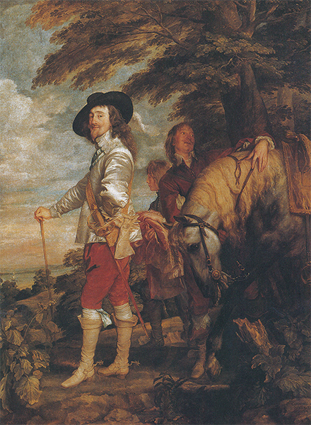

VISIÓN Y VISIONES
La Europa católica, primera mitad del siglo XVII
La historia del arte ha sido descrita a veces como la narración de un encadenamiento sucesivo de estilos diversos. Se nos ha dicho que al estilo romántico o normando del siglo XII, con sus arcos de medio punto, sucedió el gótico con su arco puntiagudo; que éste fue suplantado por el Renacimiento, el que tuvo sus comienzos en Italia a inicios del siglo XV y que poco a poco fue ganando terreno en todos los países de Europa. El estilo que vino después del Renacimiento recibe generalmente el nombre de barroco. Pero mientras que resulta fácil identificar los estilos anteriores mediante signos definidos, el caso no es tan sencillo en lo que al barroco se refiere. El hecho es que, desde el Renacimiento en adelante, casi hasta nuestra propia época, los arquitectos emplearon las mismas formas básicas: columnas, pilastras, cornisas, entablamentos y molduras, todo ello extraído originariamente de las ruinas clásicas. Por ello, en cierto sentido puede decirse que el estilo arquitectónico renacentista se mantiene desde los días de Brunelleschi hasta los nuestros, y, en efecto, son muchos los libros de arquitectura que hablan de todo este período bajo el nombre de Renacimiento. Por otra parte, es natural que dentro de un período tan dilatado los gustos y las modas de construcción hayan variado considerablemente, por lo que conviene poseer rótulos distintos para diferenciar esas modalidades cambiantes. Resulta un hecho sorprendente el que muchos de esos rótulos, que para nosotros son simples designaciones de estilos, fueran, originariamente, palabras ofensivas o burlescas. El término gótico fue empleado en primer lugar por los comentadores artísticos italianos del Renacimiento para señalar el estilo que ellos consideraban bárbaro, y que creían que había sido introducido en Italia por los godos, los cuales habían destruido el Imperio romano y saqueado sus ciudades. El término manierismo aún conserva para mucha gente su primitivo sentido de afectación y de lo imitado superficialmente de que fueron acusados los artistas de finales del siglo XVI por los críticos del XVII. El término barroco fue empleado por los comentaristas de una época posterior que combatieron las tendencias del siglo XVII y desearon ridiculizarlas. Barroco significa, realmente, absurdo o grotesco, y el término fue empleado por personas que insistieron en que las formas de los edificios clásicos nunca debían ser aplicadas o combinadas de otra manera que como lo fueron por griegos y romanos. Desdeñar las reglas estrictas de la arquitectura antigua les parecía a esos críticos una lamentable falta de gusto; de ahí que denominaran estilo barroco al de los que tal hacían. No nos es del todo fácil a nosotros percibir hoy día esos distingos. Tanto nos hemos llegado a acostumbrar a ver en nuestras ciudades edificios de toda suerte que desdeñan y desafían las reglas de la arquitectura clásica, o que las desconocen por completo, que nos hemos vuelto insensibles, y las viejas polémicas suelen parecernos muy alejadas de las cuestiones arquitectónicas que nos interesan. La fachada de una iglesia como la de la ilustración 250 no puede sorprendernos mucho, porque ya hemos visto tantas imitaciones, buenas o malas, de este tipo de edificios, que apenas volvemos la cabeza para observarlas; pero cuando se lo construyó en Roma, en 1575, resultó el más revolucionario de los edificios. No fue una iglesia más en Roma, donde tantas iglesias existían; fue la iglesia de la orden recientemente fundada de los jesuitas, en la que se depositaron tantas esperanzas para combatir el protestantismo en toda Europa. Su propia forma tenía que corresponder a una concepción nueva e insólita; la idea renacentista de construir una iglesia circular y simétrica fue rechazada como inadecuada para el servicio divino, por lo que se elaboró un plano nuevo, sencillo e ingenioso para que fuera aceptado en todos los países europeos. La iglesia habría de tener la forma de una cruz, coronada por una gran cúpula majestuosa. En el amplio espacio rectangular conocido con el nombre de nave, los fieles podrían congregarse con holgura y atender hacia el altar mayor. Éste se erguía en el extremo del espacio rectangular, y tras él existía un ábside semejante en su forma al de las basílicas primitivas. Para atender los requerimientos propios de las devociones particulares a los santos, una hilera de pequeñas capillas fue distribuida a cada lado de la nave, cada una de ellas con un altar propio, y dos capillas mayores en los extremos de los brazos de la cruz. Es ésta una sencilla e ingeniosa manera de concebir la construcción de una iglesia, empleada a partir de entonces profusamente, combinándose en ella los rasgos principales de las iglesias medievales —su forma rectangular, destacando el altar mayor— con las aportaciones arquitectónicas renacentistas, en las que se concedía tanta importancia a los interiores grandes y espaciosos, bañados por la luz a través de una cúpula majestuosa.
Si miramos atentamente la fachada de Il Gesù —la iglesia de los jesuitas—, que fue construida por el famoso arquitecto Giacomo della Porta (1541?-1602), en seguida veremos por qué debió impresionar a sus contemporáneos, pues no era menos nueva ni ingeniosa que el interior de la iglesia. Pronto advertimos que se halla compuesta con los elementos de la arquitectura clásica, pues encontramos juntas todas sus piezas: columnas (o mejor, medias columnas y pilastras) sosteniendo un arquitrabe coronado por un gran ático que, a su vez, sostiene el último orden. Incluso en la distribución de estas piezas se emplean algunas modalidades de la arquitectura clásica: la gran entrada central, enmarcada por columnas y flanqueada por dos partes más pequeñas, recuerda la estructura de los arcos de triunfo (ilustración 74) que llegó a afianzarse sólidamente en la mente de los arquitectos al igual que lo hizo el acorde mayor en la de los músicos. No hay nada en esta sencilla y majestuosa fachada que sugiera un deliberado desafío de las reglas clásicas con la sola mira de dar rienda suelta a caprichosos artificios. Pero el modo de fusionar esos elementos clásicos en un esquema revela que las normas griegas y romanas, e incluso las renacentistas, han experimentado una fundamental alteración. Lo más sorprendente en esta fachada es que cada columna o pilastra está repetida, como para enriquecer el conjunto de la estructura e incrementar su diversidad y solemnidad. El segundo rasgo que advertimos es el cuidado del artista en evitar la repetición y la monotonía y en distribuir las partes de modo que culminen en el centro, donde la entrada queda subrayada por un doble marco. Si retrocedemos a los primeros edificios compuestos de elementos similares, inmediatamente observaremos el gran cambio de carácter que se ha producido. La capilla Pazzi, de Brunelleschi (ilustración 147), parece, en comparación, infinitamente graciosa y clara por su maravillosa simplicidad; e Il Tempietto, de Bramante (ilustración 187), casi austero en su precisa y rectilínea distribución. Incluso las abundantes complejidades de la Biblioteca de Sansovino parecen simples (ilustración 207) en comparación, debido a que el mismo esquema se repite una y otra vez: cuando se ha visto uno, se han visto todos. En la fachada de Della Porta para la primera iglesia de los jesuitas todo depende del efecto del conjunto; todo se halla fundido en un amplio y complejo esquema. Acaso el rasgo más característico, a este respecto, sea la atención que ha puesto el arquitecto en ligar el piso superior con el inferior empleando la forma de unas volutas que nunca tuvieron lugar en la arquitectura clásica. No necesitamos más que imaginar una forma de esta clase sobre cualquier templo griego, o sobre cualquier teatro romano, para darnos cuenta de lo desplazada que en ellos nos resultaría. En efecto, tales curvas y espirales han sido las responsables de muchas de las censuras dirigidas a los arquitectos barrocos por quienes sostenían la pureza de la tradición clásica. Pero si cubrimos los adornos ofensivos con un trozo de papel y tratamos de representarnos el edificio sin su concurso, tendremos que admitir que no son puramente ornamentales. Sin ellos, el edificio parece carente de justificación, pues contribuyen a darle esa unidad y coherencia esencial que fue el propósito del artista. Con el curso del tiempo, los arquitectos barrocos tuvieron que emplear recursos más audaces e insólitos para conseguir la unidad esencial de un gran esquema. Aislados, esos recursos parecen a menudo bastante extraños, pero en todos los buenos edificios son sustanciales al propósito del arquitecto.
250 Giacomo della Porta, Iglesia de Il Gesù, Roma, h. 1575-1577. Iglesia del barroco temprano.
La evolución de la pintura desde el punto muerto del manierismo hacia un estilo más rico en posibilidades que el de los primeros grandes maestros fue, en algunos aspectos, semejante a la de la arquitectura barroca. En los grandes cuadros de Tintoretto y de El Greco hemos visto el nacimiento de algunas ideas que fueron adquiriendo mayor importancia en el arte del siglo XVII: el énfasis en la luz y el color, el desdén por la armonización sencilla y la preferencia por las composiciones más complicadas. Sin embargo, la pintura del siglo XVII no es precisamente una continuación del estilo manierista. Al menos, la gente de la época no lo creyó así, pues consideró que el arte había seguido adelante por el mal camino y que era preciso arrancarlo de él. Por aquellos días se gustaba hablar de arte; en Roma, especialmente, existían hombres cultos aficionados a discutir acerca de los diversos movimientos existentes entre los artistas de su época, comparándolos con los viejos maestros y tomando partido en sus intrigas y disputas. Tales discusiones fueron también algo en cierto modo nuevo en el mundo del arte. Empezaron en el siglo XVI con interrogantes acerca de si la pintura era mejor que la escultura, o si el dibujo, era más importante que el color, o viceversa (los florentinos sostenían el dibujo y los venecianos el color). Ahora, sus temas habituales eran distintos: se hablaba de dos artistas que habían llegado a Roma procedentes del norte de Italia y cuyos procedimientos parecían totalmente opuestos. Uno era Annibale Carracci (1560-1609), de Bolonia, y el otro, Michelangelo da Caravaggio (1573-1610), de un pequeño lugar próximo a Milán. Ambos artistas parecían cansados del manierismo; pero el modo con que cada uno de ellos superó sus artificiosidades fue muy distinto. Annibale Carracci pertenecía a una familia de pintores que estudiaron el arte de Venecia y de Correggio; a su llegada a Roma, Carracci cayó bajo el encanto de las obras de Rafael, que admiró extremadamente, proponiéndose recobrar algo de su sencillez y belleza en lugar de contradecirle deliberadamente, como hicieran los manieristas. Críticos posteriores le han atribuido la intención de imitar lo mejor de todos los grandes pintores del pasado. No es posible que se formulara nunca un programa de esta índole (lo que se llama eclecticismo). Esto se hizo después en las academias o escuelas de arte que tomaron su obra como modelo. Carracci tenía demasiado de verdadero artista como para adoptar tan insensata idea. Pero el grito de batalla de sus partidarios en los corrillos de Roma era el cultivo de la belleza clásica. Tal propósito podemos verlo en el cuadro de altar de la Virgen afligida ante el cuerpo exánime del Cristo (ilustración 251). No tenemos más que recordar el atormentado cuerpo del Cristo pintado por Grünewald (ilustración 224) para darnos cuenta de cuánto cuidado puso Annibale Carracci en no hacernos pensar en los horrores de la muerte y en las agonías del dolor. El cuadro mismo es tan sencillo y armónico en su composición como el de cualquier pintor renacentista. Con todo, no lo tomaríamos fácilmente por un cuadro renacentista. La forma de hacer caer la luz sobre el cuerpo del Cristo, su manera de provocar nuestras emociones, es distinta por completo, es barroca. Fácil es desdeñar un cuadro semejante por sentimental, pero no tenemos que olvidar la finalidad a que obedecía: se trata de un cuadro de altar, para ser contemplado en actitud orante y devota con los cirios ardiendo ante él.
251 Annibale Carracci, Piedad, 1599-1600. Retablo; óleo sobre lienzo, 156 x 149 cm; Museo de Capodimonte, Nápoles.
Cualquiera fuere nuestro modo de pensar acerca de los procedimientos de Carracci, lo cierto es que Caravaggio y sus partidarios no los tenían en mucho. Los dos pintores, es verdad, se hallaban en las mejores relaciones —lo que no era poco en lo que a Caravaggio se refiere, pues era éste de carácter rudo e irascible, siempre dispuesto a sentirse ofendido, e incluso a clavarle un puñal a cualquiera—, pero las obras de ambos seguían líneas diferentes. Asustarse de la fealdad le parecía a Caravaggio una flaqueza despreciable. Lo que él deseaba era la verdad. La verdad tal como él la veía. No sentía ninguna preferencia por los modelos clásicos ni ningún respeto por la belleza ideal. Quería romper con los convencionalismos y pensar por sí mismo respecto al arte (ilustraciones 15 y 16). Algunos consideran que lo que principalmente se proponía era horrorizar al público; que no sintió ningún respeto por ninguna clase de tradición o de belleza. Fue uno de los primeros pintores a los que se dirigieron acusaciones semejantes y el primero cuya actitud fue resumida por los críticos en una palabra: se le acusó de naturalista. De hecho, Caravaggio fue demasiado grande y serio artista como para proponerse un puro sensacionalismo. Mientras los críticos argüían, él trabajaba sin descanso, y su obra no ha perdido nada de su atrevimiento en los casi cuatro siglos que han pasado desde entonces. Considérese su cuadro de santo Tomás (ilustración 252): los tres apóstoles observando al Cristo, uno de ellos introduciendo su dedo en su costado, parecen bien poco convencionales. Es fácil imaginar que un cuadro semejante chocara a la gente devota como irreverente y casi ultrajante. Estaban acostumbrados a ver a los apóstoles como figuras respetables envueltas en hermosos ropajes, y ahora se hallaban ante lo que parecían vulgares jornaleros, con rostros atezados y arrugadas frentes. Pero Caravaggio contestaría que eran viejos jornaleros, gente vulgar. Y en cuanto al indecoroso ademán del dubitativo Tomás, la Biblia es bien explícita. El Cristo (Juan 20, 27)
Luego dice a Tomás: «Acerca aquí tu dedo y mira mis manos; trae tu mano y métela en mi costado, y no seas incrédulo sino creyente.»
El naturalismo de Caravaggio, esto es, su propósito de copiar fielmente la naturaleza, nos parezca bella o fea, acaso fue más intenso que la acentuación respecto a la belleza de Carracci. Caravaggio debió leer la Biblia una y otra vez, y meditar acerca de sus palabras. Fue uno de los grandes artistas, como Giotto y Durero antes de él, que desearon ver los acontecimientos sagrados ante sus ojos, como si hubieran acaecido en las proximidades de su casa. E hizo todo lo posible para que los personajes de los textos antiguos parecieran reales y tangibles. Incluso su modo de manejar la luz y la sombra colaboró a este fin; la luz, en sus cuadros, no hace parecer más suaves y graciosos los cuerpos, sino que es dura y casi cegadora en su contraste con las sombras profundas, haciendo que el conjunto de la extraña escena resalte con una inquebrantable honradez que pocos de sus contemporáneos podían apreciar, pero de efectos decisivos sobre los artistas posteriores.
252 Caravaggio, La incredulidad de santo Tomás, h. 1602-1603. Óleo sobre lienzo, 107 x 146 cm; Palacio Institucional y Jardines de Sanssouci, Potsdam.
Annibale Carracci y Caravaggio pasaron de moda en el siglo XIX, y actualmente están volviendo a ser valorados. Pero el impulso que tanto uno como otro dieron al arte de la pintura apenas es imaginable. Los dos trabajaron en Roma, y Roma, en aquella época, era el centro del mundo artístico. Creadores de todas partes de Europa fueron allí, tomaron parte en las discusiones acerca de la pintura, en las querellas de los cenáculos, estudiaron a los viejos maestros, y regresaron a sus países de origen refiriendo anécdotas del último movimiento, de manera muy semejante a lo que a inicios de nuestro siglo hacían los artistas respecto a París. De acuerdo con sus tradiciones y caracteres nacionales, los artistas preferían una u otra de las dos escuelas rivales de Roma, y los mejores de ellos desarrollaron su propia personalidad mediante lo que habían aprendido de esos olvidados movimientos. Roma seguía siendo el mejor sitio para otear el panorama espléndido de la pintura en los países adheridos al catolicismo romano. Entre los muchos maestros italianos que desarrollaron en Roma su estilo, el más famoso fue probablemente Guido Reni (1575-1642), pintor de Bolonia que después de una breve etapa de titubeo ligó su suerte a la escuela de Carracci. Su fama, como la de su maestro, fue antaño inconmensurablemente más elevada que hoy (ilustración 7). Hubo una época en la que su nombre se situaba al mismo nivel que el de Rafael, y si miramos la ilustración 253 nos daremos cuenta del porqué. Reni pintó este fresco en el techo de un palacio de Roma en 1614. Representa a la aurora en la figura de Apolo, el juvenil dios del sol, en su carro, rodeado de las Horas, las hermosas doncellas que danzan gozosamente precedidas por un niño con una antorcha, figurando el lucero matutino. Tal es el encanto y la belleza de esta representación del esplendoroso nacimiento del día que resulta comprensible que evocara al Rafael de los frescos de la Farnesina (ilustración 204). Reni quiso hacer pensar en este gran maestro al que se propuso emular. Si los críticos modernos han dejado de tener a menudo en tanta estima lo realizado por Guido Reni, esto puede obedecer a que han considerado, o temido, que esta misma emulación de otro maestro haya hecho de la obra de Reni algo demasiado consciente, excesivamente deliberado en su esfuerzo por conseguir la pura belleza. No tenemos por qué discutir acerca de estas distinciones. En Rafael experimentamos que el sentido de la belleza y de la serenidad fluyen espontáneamente de su condición y arte propios; en Reni percibimos que se propuso pintar del mismo modo como cuestión de principios, y que si los discípulos de Caravaggio le hubieran convencido de que estaba equivocado, podía haber adoptado un estilo diferente. Pero no fue culpa de Reni el que esas cuestiones de principio se produjeran y penetraran en el espíritu y en las conversaciones de los pintores. Esto no era, efectivamente, culpa de nadie; el arte se había desarrollado hasta tal punto que los artistas tenían que ser conscientes, de manera inevitable, de la elección de los procedimientos que ante ellos se hallaban. Y una vez que demos esto por admitido, estaremos en libre disposición de admirar la manera en que Guido Reni llevó a cabo su programa de belleza, cómo dejó a un lado deliberadamente todo lo que consideró en la naturaleza bajo y feo o inadecuado para sus elevadas ideas, y cómo su indagación en formas más perfectas e ideales que la realidad fue recompensada con el éxito. Con Annibale Carracci, Guido Reni y sus discípulos se estableció un programa de idealización, de embellecimiento de la naturaleza según un criterio establecido por las estatuas clásicas. Nosotros denominamos a este programa neoclásico o académico, para distinguirlo del arte clásico que no se halla ligado a programa de ninguna especie. Las discusiones acerca de ello no cesarán fácilmente, pero nadie niega que entre sus campeones existieron grandes maestros que dieron una imagen de un mundo de pureza y de belleza sin el cual nos faltaría algo.
253 Guido Reni, Aurora, 1614. Fresco, 280 x 700 cm; Palacio Pallavicini-Rospigliosi, Roma.
El más importante de los maestros académicos fue el francés Nicolás Poussin (1594-1665), que hizo de Roma su patria adoptiva. Poussin estudió las esculturas clásicas con apasionado celo, porque quería inspirarse en su belleza para traducir su visión de las tierras de inocencia y dignidad perdidas. La ilustración 254 nos presenta uno de los más famosos resultados obtenidos mediante esos infatigables estudios. Muestra un apacible y risueño paisaje meridional: hermosos jóvenes y una perfecta y noble doncella están agrupados en torno a una gran tumba de piedra; uno de los pastores —pues de ellos se trata, como vemos por sus vestidos y sus bastones— se ha arrodillado intentando descifrar la inscripción de la sepultura; uno de ellos la está señalando a la vez que contempla a la hermosa pastora que, como su compañero en el otro lado, permanece en melancólico silencio. La inscripción está en latín, y dice: Et in Arcadia ego (También yo estoy en Arcadia): yo, la muerte, reino también en la idílica región de ensueño de las pastorales, en Arcadia. Ahora comprendemos la sorprendente actitud de asombro y contemplación con que miran el sepulcro las figuras que lo enmarcan, y admiramos aún más lo bellamente que se corresponden entre sí, por sus movimientos, las figuras que leen la inscripción. La composición parece bastante simple, pero esta simplicidad nace de una sabiduría artística inmensa. Sólo ella podía evocar esta nostálgica visión de apacible reposo en el que la muerte ha perdido su horror.
254 Nicolás Poussin, Et in Arcadia ego, 1638-1639. Óleo sobre lienzo, 85 x 121 cm; Museo del Louvre, París.
La misma emoción de belleza nostálgica es la que hizo famosas a las obras de otro francés italianizado: Claude Lorrain (1600-1682), unos seis años más joven que Poussin. Lorrain estudió el paisaje de la campiña romana, las llanuras y colinas en torno a Roma, con sus encantadores matices meridionales y sus majestuosos recuerdos del gran pasado. Como Poussin, revela en sus apuntes que fue un perfecto maestro de la representación realista de la naturaleza, siendo sus estudios de árboles muy gratos de mirar. Pero para cuadros mayores y grabados, solamente eligió aquellos temas que consideró merecedores de tener un lugar en sus ensoñadoras visiones del pasado, sumergiéndolas en una luz dorada o un aire plateado que parece transfigurar toda la escena (ilustración 255). Habría de ser Claude Lorrain el primero en abrir los ojos de las gentes a la belleza sublime de la naturaleza, y durante casi un siglo después de su muerte los viajeros juzgaban un paisaje real con arreglo a lo visto en el pintor; y si les recordaba sus cuadros, dirían que era bello y se instalarían en él para repostar. Acaudalados ingleses fueron aún más allá y decidieron modelar el trozo de la naturaleza que les pertenecía, en sus parques o haciendas, según los sueños de belleza de Claude Lorrain. En este sentido, más de un paraje de la encantadora campiña inglesa debería ostentar realmente la firma del pintor francés que se estableció en Italia y se apropió del programa de Carracci.
255 Claude Lorrain, Paisaje y sacrificio a Apolo, 1662-1663. Óleo sobre lienzo, 174 x 220 cm; abadía de Anglesey, Cambridgeshire.
El artista nórdico que entró más directamente en contacto con la atmósfera romana de los días de Carracci y de Caravaggio perteneció a una generación anterior a Poussin y a Claude Lorrain, siendo casi de la misma edad que Guido Reni. Fue el flamenco Pedro Pablo Rubens (1577-1640), quien llegó a Roma en 1600 cuando contaba veintitrés años, edad que acaso sea la más impresionable de todas. Debió participar en muchas acaloradas discusiones sobre arte, y estudió gran número de obras nuevas y antiguas no sólo en Roma, sino también en Génova y en Mantua (donde se estableció durante algún tiempo). Escuchaba y aprendía con profundo interés, pero no parece que se ligara a ningún grupo o movimiento. Seguía siendo, en lo íntimo, un pintor flamenco, un artista del país en el que habían trabajado Van Eyck, Rogier van der Weyden y Bruegel. Estos pintores de los Países Bajos siempre estuvieron más interesados en la multiplicidad de las cosas; trataron de emplear todos los recursos artísticos que conocían para expresar la contextura de las telas y de los cuerpos animados, y de pintar, en suma, tan fielmente como les era posible todo lo que tenían ante los ojos. No se preocuparon demasiado por los criterios acerca de la belleza, tan sagrados para sus colegas italianos, y ni siquiera manifestaron tener en mucho los temas relevantes. De esta tradición procedía Rubens, y toda su admiración por el arte nuevo que se estaba desarrollando en Italia no parece haberle turbado en su creencia fundamental de que la tarea de un pintor consistía en pintar el mundo en torno a él; pintar lo que le gustase, hacernos sentir su complacencia en la belleza múltiple y palpitante de las cosas. Para un punto de vista semejante, no existía nada contradictorio en el arte de Caravaggio y de Carraci. Rubens admiró la manera en que Carracci y su escuela revivían temas y mitos clásicos y componían pinturas de altar de modo que fuesen edificantes para los fieles; pero también admiró la sinceridad inquebrantable con que Caravaggio estudió la naturaleza.
Cuando Rubens regresó a Amberes, en 1608, tenía treinta y un años y había aprendido todo cuanto podía ser enseñado; adquirió tal facilidad en el manejo de los pinceles y el color, las figuras y los ropajes, así como en el ordenamiento de composiciones en gran escala, que no tuvo rivales al norte de los Alpes. Sus predecesores de Flandes habían pintado en su mayor parte cuadros de reducidas proporciones. Él trajo de Italia la predilección por telas enormes para decorar iglesias y palacios, lo que satisfizo el gusto de príncipes y dignatarios; aprendió el arte de componer las figuras en amplia escala y a emplear la luz y los colores para incrementar el efecto del conjunto. La ilustración 256, boceto para el cuadro del altar mayor de una iglesia de Amberes, muestra cuán íntimamente estudió a sus predecesores italianos y cuán atrevidamente desarrolló sus ideas. Trátase de nuevo del tema tradicional de la Virgen rodeada de algunos santos, tema con el que forcejearon los artistas de la época del Díptico de Wilton (ilustración 143), la Madona de Bellini (ilustración 208), o la Madona Pesaro de Ticiano (ilustración 210), y puede resultar instructivo examinar de nuevo estas ilustraciones para ver la libertad y holgura con que Rubens llevó a cabo la antigua tarea. Una cosa se advierte a primera vista: hay más movimiento, más luz, más espacio y más figuras en este cuadro que en cualquiera otro de los anteriores. Los santos están agrupados ante el elevado trono de la Virgen en alegre tropel. En el primer término, el obispo san Agustín, el mártir san Lorenzo con las parrillas en las que padeció su suplicio, y el viejo fraile santo Domingo, guían al espectador hacia el objeto de su culto. San Jorge está con el dragón, y san Sebastián con un carcaj y flechas, mirándose entre sí con acendrada emoción, mientras un guerrero, con la palma del martirio en la mano, se arrodilla ante el trono. Un grupo de mujeres, entre ellas una monja, contemplan conmovidas la escena principal, en la que una muchacha, auxiliada por un angelito, está cayendo de rodillas para recibir un anillo del Cristo niño que se inclina hacia ella desde el regazo de su madre. Se trata de la leyenda de las nupcias de santa Catalina, que vio escena semejante en una visión y se consideró a sí misma esposa del Cristo. San José observa bondadoso desde detrás del trono, y san Pedro y san Pablo —reconocibles, el primero, por la llave; el segundo, por la espada— permanecen en profunda contemplación, ofreciendo un singular contraste con la imponente figura de san Juan, al otro lado, que está aislado, bañado por la luz, extendiendo sus brazos en admiración extática, mientras dos graciosos angelotes arrastran a un cordero mal de su grado sobre las gradas del trono. Del cielo, otra pareja de pequeños ángeles desciende apresuradamente a colocar una corona de laurel sobre la cabeza de la Virgen.
256 Pedro Pablo Rubens, Virgen y Cristo niño entronizados con santos, h. 1627-1628. Boceto para un gran retablo; óleo sobre tabla, 82,2 x 55,5 cm; Galería de Pintura del Museo Nacional, Berlín.
Una vez contemplados los pormenores, debemos considerar de nuevo el conjunto y admirar la gran soltura con que Rubens hizo que todos los personajes quedasen ligados entre sí, comunicándole al todo una atmósfera de gozosa y alegre solemnidad. No puede extrañar que un maestro que podía concebir tan vastos cuadros con tal seguridad en la mano y en la mirada recibiera en seguida más encargos de los que pudiera satisfacer por sí solo. Pero esto no le preocupó; Rubens era hombre de una capacidad perfectamente organizada y de gran encanto personal; muchos buenos pintores de Flandes estaban orgullosos de trabajar bajo su dirección y de aprender de este modo. Si una iglesia o uno de los reyes o príncipes europeos le encargaban un cuadro, a veces sólo pintaba un pequeño boceto en color (la ilustración 256 muestra uno de tales bocetos para una gran composición). De discípulos y ayudantes sería la tarea de trasladar estas ideas a la gran tela, y únicamente cuando hubiesen concluido de pintarla de acuerdo con lo establecido por el maestro, éste tomaría de nuevo el pincel y retocaría aquí un rostro y allí un vestido de seda, o suavizaría en otro lugar un contraste demasiado fuerte. Él tenía confianza en que su pincelada podía fácilmente comunicar vida a cualquier cosa, y estaba en lo cierto, pues éste es el gran secreto del arte de Rubens: su mágica habilidad para vivificarlo todo intensa y gozosamente. Podemos comprobar y admirar esta maestría suya en algunos de los sencillos dibujos (ilustración 1) y cuadros que pintó para su propio entretenimiento. La ilustración 257 presenta una cabeza de niña, probablemente la hija de Rubens; aquí no existen recursos de composición ni espléndidos atavíos, ni chorros de luz, sino un sencillo retrato, de frente, de una niña. Y sin embargo, parece respirar y latir como un cuerpo vivo. Comparados con este retrato, los de los siglos anteriores parecen un tanto lejanos e irreales, por excelentes que puedan ser en tanto que obras de arte. Es inútil tratar de analizar cómo conseguía Rubens esta impresión de vitalidad alegre, pero sin duda tiene algo que ver con los atrevidos y delicados toques de luz con que indica la humedad de los labios y el modelado del rostro y los cabellos. En un grado aún mayor que su predecesor Ticiano, empleó los pinceles como principales instrumentos; sus cuadros ya no son dibujos modelados cuidadosamente por el color, sino que han sido ejecutados con medios «pictóricos», que son los que acrecientan la impresión de vida y vigor.
257 Pedro Pablo Rubens, Cabeza de una niña (seguramente la hija del artista, Clara Serena), h. 1616. Óleo sobre lienzo, montado sobre madera, 33 x 26,3 cm; colección de los Príncipes de Licchtenstein, Vaduz.
La combinación de sus dotes inigualables en la creación de grandes composiciones en color con su capacidad de infundirles una tumultuosa energía es lo que aseguró a Rubens una fama y un éxito de los que jamás disfrutó ningún artista antes de él. Su arte fue tan eminentemente propicio para acrecentar la pompa y el esplendor de los palacios, y para exaltar a los poderosos del mundo, que gozó de una especie de monopolio dentro de la esfera en que se movió. Fue la época en que las tensiones religiosas y sociales de Europa culminaron en la terrible guerra de los treinta años en el continente, y en la guerra civil en Inglaterra. Por una parte estaban los monarcas absolutos y sus cortes, la mayoría de ellos sostenidos por la Iglesia católica; por la otra, las nacientes ciudades mercantiles, protestantes las más de ellas. Los Países Bajos se hallaban divididos entre la Holanda protestante, resistiéndose a la dominación católica española, y el Flandes católico, gobernado desde Amberes, leal a España. Rubens alcanzó la posición única de pintor del ámbito católico; aceptó encargos de los jesuitas de Amberes y de los virreyes católicos de Flandes, del rey Luis XIII de Francia y de su madre, la astuta María de Médicis, de los reyes Felipe III de España y Carlos I de Inglaterra, quien le nombró caballero. Al ir de corte en corte como huésped ilustre, a menudo se le encargaban delicadas misiones diplomáticas y políticas, siendo una de las más importantes la de llevar a cabo una reconciliación entre Inglaterra y España en defensa de lo que se hoy denominaría bloque reaccionario. Con todo, permaneció en contacto con los eruditos de su tiempo, manteniendo con ellos correspondencia en latín acerca de cuestiones arqueológicas y artísticas. Su autorretrato ostentando espada de noble (ilustración 258) revela que se daba perfecta cuenta de su posición excepcional; pero no se advierte ningún vano orgullo en su penetrante mirada, pues siguió siendo un verdadero artista. Entre tanto, de su taller de Amberes iban surgiendo, en cantidades ingentes, cuadros de una maestría deslumbradora. Bajo su mano, las fábulas clásicas y las concepciones alegóricas alcanzaban tanto verismo como el retrato de su propia hija.
258 Pedro Pablo Rubens, Autorretrato, h. 1639. Óleo sobre lienzo, 109,5 x 85 cm; Museo de Arte Histórico, Viena.
Los cuadros alegóricos son considerados generalmente como un tanto enojosos y abstractos, pero en la época de Rubens constituyeron un recurso excelente para expresar determinadas ideas. La figura 259 muestra uno de esos cuadros; se dice que Rubens se lo dio en obsequio a Carlos I cuando trató de inducirle a que hiciera las paces con España. En esta obra se contraponen los beneficios de la paz con los horrores de la guerra. Minerva, la diosa del saber y de las artes de la civilización, expulsa a Marte, cuya horrible compañera, la Furia bélica, se aleja ya. Bajo la protección de Minerva, las alegorías de la paz se despliegan ante nuestros ojos en símbolos de fecundidad y de abundancia como sólo Rubens podía concebirlos: la Paz misma ofreciendo su pecho a un niño, un fauno contemplando gozosamente los espléndidos frutos (ilustración 260), los restantes compañeros de Baco, las ménades conduciendo oro y riquezas, y la pantera jugando apaciblemente como un gato grande; en el otro lado, tres niños de mirar turbado, huyendo del terror de la guerra, se acogen al regazo de la paz y de la abundancia y son coronados por un joven genio. Nadie que se pierda en la riqueza de pormenores de este cuadro, con sus vivos contrastes y sus brillantes colores, dejará de observar que esas ideas no fueron para Rubens pálidas abstracciones sino poderosas realidades. Tal vez sea por ello por lo que algunas personas deban acostumbrarse primero a Rubens antes de empezar a comprenderle y apreciarle. Él no empleó las formas ideales de la belleza clásica, que le resultaban demasiado remotas y abstractas. Los hombres y mujeres que pintó son seres vivos, tal como los vio y escogió; la esbeltez no estaba de moda en el Flandes de su tiempo, y por ello muchos le censuran el que sean «gordas» las mujeres de sus cuadros. Claro está que esta censura poco tiene que ver con el arte y, en consecuencia, no la podemos tomar muy en serio; pero puesto que es frecuente, convendrá advertir que la complacencia en la exuberancia y en la agitación de la vida en todas sus manifestaciones libró a Rubens de convertirse en un mero virtuoso de su arte, haciendo que sus obras pasaran de las simples decoraciones barrocas de los grandes salones a obras maestras que siguen conservando su vitalidad incluso dentro de la atmósfera helada de los museos.
259 Pedro Pablo Rubens, Alegoría de las bendiciones de la paz, 1629-1630. Óleo sobre lienzo, 203,5 x 298 cm; National Gallery, Londres.
260 Detalle de la ilustración 259.
Entre los muchos discípulos y colaboradores famosos de Rubens, el mayor y más independiente fue Anton van Dyck (1599-1641), que tenía veintidós años menos que su maestro y pertenecía a la generación de Poussin y Claude Lorrain. En seguida adquirió Van Dyck todo el virtuosismo de Rubens en captar las calidades y la superficie de las cosas, tratárase de sedas o de cuerpos humanos; pero se diferenció mucho de su maestro por el temperamento y el carácter. Al parecer, Van Dyck no era un hombre robusto, y en sus cuadros predominan con frecuencia una ligera melancolía y languidez. Tal vez fuera esto lo que atrajera a los austeros nobles de Génova y a los caballeros de la corte de Carlos I. Se convirtió en pintor de cámara de este último en 1632, britanizando su nombre en sir Anthony Vandyke. Le debemos un archivo artístico de aquella sociedad con su porte aristocrático y su culto de los refinamientos cortesanos. Su retrato de Carlos I (ilustración 261) acabando de apearse de su caballo durante una partida de caza muestra al monarca Estuardo tal como él hubiera deseado vivir en la historia: una figura de elegancia sin rival, de autoridad y gran cultura incuestionable, mecenas de las artes y defensor del derecho divino de los reyes, un hombre que no necesitaba signos externos de poder para acrecentar su dignidad innata. No tiene nada de extraño que un pintor que podía plasmar estas cualidades en sus retratos con tanta perfección fuera afanosamente solicitado por la alta sociedad. En efecto, Van Dyck se halló tan abrumado de encargos que, como su maestro Rubens, no le fue posible realizarlos por sí solo; por ello tuvo que recurrir a un gran número de colaboradores para que pintaran los trajes de sus modelos valiéndose de maniquíes; y, con frecuencia, ni siquiera fue de su mano la totalidad de un rostro. Algunos de estos retratos se acercan lamentablemente a los lisonjeros figurines de la moda de períodos posteriores, y no hay duda de que Van Dyck estableció un precedente nocivo que ha perjudicado en gran medida a la pintura de retratos; pero esto no disminuye en nada la excelencia de sus obras mejores en este género, ni ha de hacernos olvidar que él fue, más que ningún otro, quien contribuyó a que cristalizaran los ideales de la nobleza de sangre azul y de la desenvoltura cortesana (ilustración 262) que enriquece nuestra visión del hombre, no menos que las figuras de Rubens, fuertes, vigorosas y rebosantes de vida.

261 Anton van Dyck, Carlos I de Inglaterra, h. 1635. Óleo sobre lienzo, 266 x 207 cm; Museo del Louvre, París.
262 Anton van Dyck, Lord John y lord Bernard Stuart, h. 1638. Óleo sobre lienzo, 237,5 x 146,1 cm; National Gallery, Londres.
Durante una de sus estancias en España, Rubens encontró a un joven pintor que había nacido en el mismo año que su discípulo Van Dyck y que ocupaba en la corte del rey Felipe IV, en Madrid, un cargo semejante al de aquél en la de Carlos I. Se trataba del pintor Diego Velázquez (1599-1660). Aunque no había estado aún en Italia, Velázquez quedó impresionado profundamente con los descubrimientos y el estilo de Caravaggio, al que conoció a través de las obras de sus imitadores. Asimiló el programa del naturalismo y consagró su arte a la observación objetiva de la realidad, soslayando cualquier convencionalismo. La ilustración 263 muestra una de sus primeras obras: un aguador de las calles de Sevilla. Se trata de un cuadro de género, del tipo de los que crearon los flamencos para desplegar su habilidad, pero está ejecutado con toda la penetración y la intensidad de La incredulidad de santo Tomás, de Caravaggio (ilustración 252). El viejo aguador, con su rostro atezado y arrugado, y su astroso capote, el voluminoso cántaro de barro con sus estrías circulares, la superficie de la vidriada botija y el reflejo de la luz en la transparente copa de cristal, todo está pintado con tanto verismo que hasta nos parece que podríamos tocar los objetos. Ante este cuadro, a nadie se le ocurre preguntar si los objetos representados son hermosos o feos, o si la escena es importante o trivial. Ni siquiera los colores son bellos en sí, predominando el gris, el castaño y los matices verdosos. Y sin embargo, el conjunto posee tan intensa armonía que quien se haya detenido frente al cuadro alguna vez no podrá olvidarlo jamás.
263 Diego Velázquez, El aguador de Sevilla, h. 1619-1620. Óleo sobre lienzo, 106,7 x 82 cm; Museo Wellington, Apsley House, Londres.
Por consejo de Rubens, Velázquez obtuvo autorización para trasladarse a Roma y estudiar los cuadros de los grandes maestros. Partió en 1630, pero regresó en seguida a Madrid donde, salvo un segundo viaje a Italia, permaneció siempre como miembro muy respetado y famoso de la corte de Felipe IV. Su tarea principal era pintar retratos del Rey y de los miembros de la familia real, pocos de los cuales poseyeron rostros atractivos y ni siquiera interesantes: fueron hombres y mujeres preocupados por su dignidad y ataviados con rigidez. La tarea no se diría muy grata para un pintor; pero Velázquez transformó estos retratos como por arte de magia, convirtiéndolos en una de las expresiones pictóricas más fascinantes que el mundo haya visto nunca. Hacía mucho que había abandonado una adhesión demasiado estrecha al estilo de Caravaggio; estudió la pincelada de Rubens y de Ticiano, pero no hay nada de segunda mano en su manera de acercarse a la naturaleza. La ilustración 264 muestra el retrato del papa Inocencio X pintado por Velázquez en Roma entre 1649 y 1650, algo más de cien años después del de Pablo III de Ticiano (ilustración 214). Nos recuerda que en la historia del arte el paso del tiempo no necesariamente implica un cambio de punto de vista. Podemos estar seguros de que Velázquez sentía el reto de aquella obra maestra, al igual que Ticiano se había sentido estimulado por el grupo de Rafael (ilustración 206). Pero pese a la maestría con que dominaba los recursos de Ticiano, por el modo en que su pincel interpreta el lustre de la tela y la seguridad de toque con que capta la expresión del papa, no nos cabe la menor duda de que aquel hombre era así, y de que no estamos ante una fórmula bien ensayada. Nadie que fuese a Roma debería perderse la gran experiencia de contemplar esta obra maestra en la Galería Doria Pamphili.
264 Diego Velázquez, El papa Inocencio X, 1649-1650. Óleo sobre lienzo, 140 x 120 cm; Galería Doria Pamphili, Roma.
Desde luego, las obras de madurez de Velázquez dependen hasta tal punto del efecto de la pincelada y de la delicada armonía del color, que las ilustraciones no pueden darnos sino una idea muy vaga de lo que son los originales. Casi todo lo dicho es aplicable a su enorme lienzo (más de tres metros de altura) titulado Las meninas (las damas de honor) (ilustración 266). Vemos al propio Velázquez trabajando en un gran cuadro, y tras una observación más cuidadosa descubriremos también qué es lo que está pintando. El espejo de la pared posterior del estudio refleja las figuras del Rey y la Reina (ilustración 265), que están posando para su retrato. De modo que lo que estamos viendo es lo que ellos ven: un grupo de gente que ha entrado a la cámara. Se trata de su hija pequeña, la infanta Margarita, flanqueada por dos damas de honor, una de las cuales le ofrece un refresco mientras que la otra hace una reverencia a la real pareja. Conocemos sus nombres y también los de los dos enanos (la muchacha fea y el niño que juega con un perro), cuyo cometido era divertir. Los graves adultos del fondo parecen cuidar de que los visitantes se comporten correctamente.
266 Diego Velázquez, Las meninas, 1656. Óleo sobre lienzo, 318 x 276 cm; Museo del Prado, Madrid.
265 Detalle de la ilustración 266.
¿Qué significa todo esto exactamente? Quizá nunca lo sepamos, pero me gustaría pensar que Velázquez detuvo un instante del tiempo mucho antes de la invención de la cámara fotográfica. Puede ser que la princesa hubiera sido traída para paliar el aburrimiento de la pose y que el Rey o la Reina comentaran que allí había un tema digno de un pincel. Las palabras pronunciadas por el soberano se toman siempre como una orden, de modo que a lo mejor debemos esta obra maestra a un deseo pasajero que solamente Velázquez podía hacer realidad.
Por supuesto, Velázquez no solía contar con incidentes semejantes para transformar su visión de la realidad en grandes cuadros. En un retrato como el del príncipe Felipe Próspero de España, de dos años de edad (ilustración 267), no hay nada desacostumbrado, nada, al menos, que nos sorprenda a primera vista. Pero en el original, las diversas tonalidades de rojo (de la rica alfombra persa, el terciopelo de la silla, la cortina, las mangas y las rosadas mejillas del niño), combinadas con los tonos fríos y plateados de blanco y gris que se oscurecen hacia el fondo, forman una armonía única. No hay nada aparatoso en el estilo de Velázquez, nada que nos sorprenda a primera vista. Pero cuanto más contemplamos sus cuadros, mayor es la admiración que sentimos por sus cualidades de artista. Incluso un pequeño tema como el del perrito que se halla sobre el sillón rojo revela una desembarazada maestría verdaderamente milagrosa. Si volvemos al perrito del retrato del matrimonio Arnolfini pintado por Jan van Eyck (ilustración 160), observaremos con cuán distintos medios logran los efectos que se proponen los grandes artistas. Van Eyck se fatigó en copiar cada pelo ensortijado del pequeño animal; Velázquez, doscientos años después, sólo trató de captar la impresión característica. Como Leonardo, aunque en mayor medida, confía en que nuestra imaginación le seguirá y completará lo que ha dejado fuera. Aunque no pintó ningún pelo aislado, su perrito parece, en efecto, más peludo y verdadero que el de Van Eyck. Por tales efectos, los fundadores del impresionismo en el París del siglo XIX admirarían a Velázquez por encima de todos los pintores del pasado.
267 Diego Velázquez, El príncipe Felipe Próspero de España, 1659. Óleo sobre lienzo, 128,5 x 99,5 cm; Museo de Arte Histórico, Viena.
Ver y observar la naturaleza con ojos limpios siempre, descubrir y saborear renovadas armonías de luz y de color, se convirtió en la tarea esencial de los pintores. En este nuevo fervor, los grandes maestros de la Europa católica coincidieron con los pintores del otro lado de la barrera política, los grandes artistas de los Países Bajos protestantes.
Pieter van Laar, Taberna de artistas con caricaturas en las paredes, en la Roma del siglo XVII, h. 1625-1639. Dibujo; plumilla, tinta y aguada sobre papel, 20,3 x 25,8 cm; Gabinete de Estampas del Museo Nacional, Berlín.